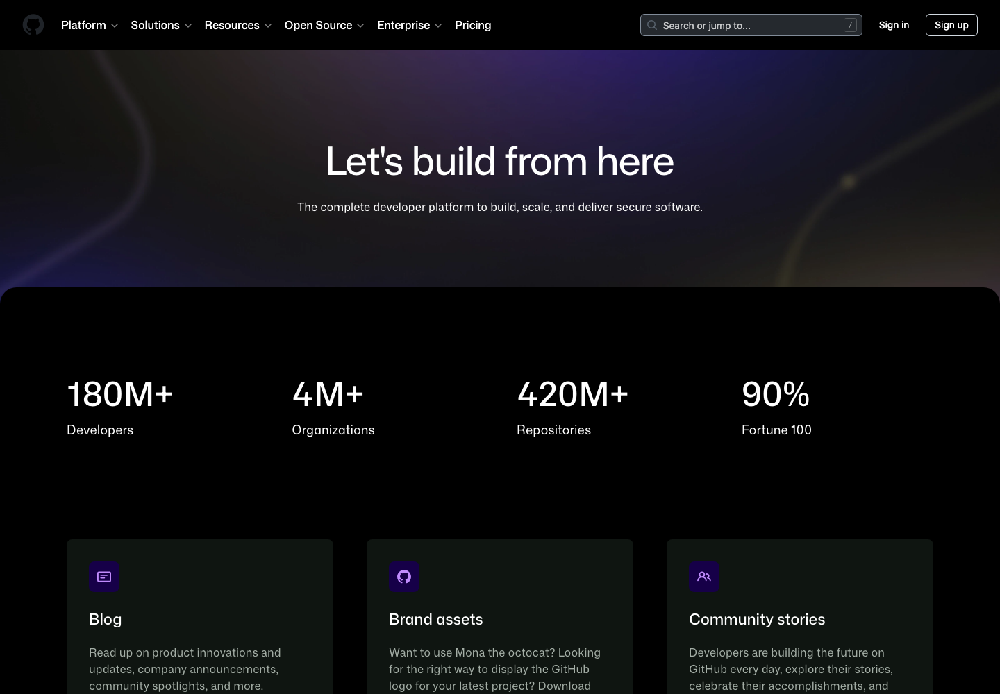
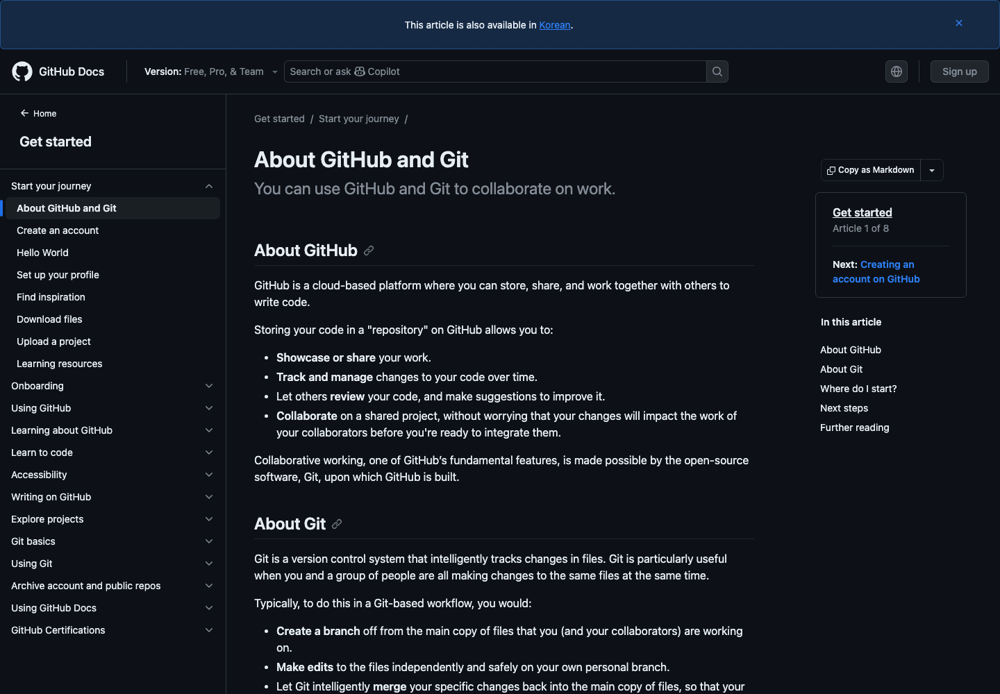

GitHub가 뭘 하는 건지
1. 한 줄 결론
GitHub는 코드를 올려두는 창고이면서, 개발팀이 코드를 바꾸고 검토하고 자동으로 테스트/배포하고 안전하게 관리하는 작업장이다.
처음에는 “개발자용 Google Drive”라고 생각해도 된다. 다만 정확히는 Drive보다 훨씬 개발 쪽에 특화되어 있다. 파일을 그냥 보관하는 게 아니라, 누가 언제 무엇을 바꿨는지 남기고, 그 변경을 리뷰하고, 문제가 없는지 자동으로 검사하고, 필요하면 서버에 배포하는 흐름까지 이어 준다.
GitHub 공식 문서는 GitHub를 “코드를 저장, 공유, 함께 작업하는 클라우드 기반 플랫폼”이라고 설명한다. 회사 소개 페이지에서는 “secure software”를 만들고 전달하는 개발자 플랫폼이라고 더 넓게 잡는다.

2. 제일 짧게 말하면
GitHub는 개발 프로젝트의 “작업 기록장 + 공유 폴더 + 검토실 + 자동화 장치”에 가깝다.
혼자 쓰면 백업과 이력 관리가 된다. 팀이 쓰면 “이 변경을 넣어도 되는가?”를 같이 검토하는 공간이 된다. 회사가 쓰면 개발, 보안, 배포, 권한 관리를 한 플랫폼 안에서 이어 붙이는 기반이 된다.
| 비유 | GitHub에서 실제로 하는 일 | 왜 중요한가 |
|---|---|---|
| 공유 폴더 | repository에 프로젝트 파일을 저장하고 공유한다. | 내 컴퓨터에만 있던 코드를 팀과 세상에 보여줄 수 있다. |
| 작업 기록장 | commit으로 변경 이력을 남긴다. | 누가 뭘 바꿨는지 추적하고, 문제가 생기면 되돌릴 수 있다. |
| 검토실 | pull request에서 변경 내용을 리뷰한다. | 코드를 바로 섞지 않고, 검토 후 합칠 수 있다. |
| 작업판 | Issues와 Projects로 버그, 기능, 할 일을 추적한다. | 코드뿐 아니라 “무엇을 해야 하는지”도 관리된다. |
| 자동화 장치 | Actions로 테스트, 빌드, 배포를 자동 실행한다. | 사람이 매번 손으로 확인하던 일을 반복 가능하게 만든다. |
3. Git과 GitHub는 다르다
여기서 많이 헷갈린다. Git은 버전 관리 시스템이다. 내 컴퓨터 안에서도 쓸 수 있다. 파일 변경 이력을 남기고, 브랜치를 만들고, 이전 상태로 돌아갈 수 있게 해준다.
GitHub는 Git을 웹 위에서 협업하기 좋게 만든 플랫폼이다. Git이 “기록하는 기술”이라면, GitHub는 그 기록을 팀원들과 공유하고 검토하고 자동화하는 장소다.

4. 개발 흐름으로 보면
GitHub의 핵심은 “코드가 바뀌는 흐름”을 정리하는 데 있다. 대충 이런 식이다.
이 흐름 덕분에 “내가 수정한 파일을 그냥 덮어쓰기”가 아니라, 변경의 이유와 결과가 남는다. 프로젝트가 커질수록 이 차이가 커진다.
5. GitHub가 하는 일
5.1. 저장소: 프로젝트의 집
GitHub의 기본 단위는 repository다. 코드, 문서, 설정 파일, 이미지, 릴리스 파일 등이 들어간다. 공식 문서도 repository를 프로젝트 파일을 저장하고 협업하는 공간으로 설명한다.
중요한 건 그냥 파일 보관이 아니라 “변경 이력”이다. 같은 파일이 계속 바뀌어도 어떤 변경이 언제 들어갔는지 남는다. 이게 개발에서 꽤 결정적이다.
5.2. 협업과 리뷰: 바로 합치지 않는다
GitHub에서 팀 작업은 보통 branch와 pull request를 중심으로 돈다. 누군가 기능을 만들면 바로 메인 코드에 넣지 않고, PR로 “이 변경을 넣어도 될까요?”라고 올린다.
팀원은 코드 차이를 보고 댓글을 달거나 수정 요청을 한다. 테스트가 통과하고 리뷰가 끝나면 merge한다. 그래서 GitHub는 코드 저장소인 동시에 코드 리뷰 공간이다.
5.3. 자동화: 사람이 반복하던 일을 Actions가 한다
GitHub Actions는 repository 안에서 workflow를 자동으로 실행한다. 공식 문서는 Actions가 소프트웨어 개발 workflow를 자동화, 커스터마이즈, 실행한다고 설명한다.
예를 들어 PR이 열릴 때마다 테스트를 돌리고, main branch에 merge되면 웹사이트를 배포하고, 새 release가 만들어지면 패키지를 발행하게 할 수 있다. “매번 사람이 터미널에서 돌리던 검사”를 GitHub 안으로 올리는 셈이다.
5.4. 보안: 코드와 secret을 지킨다
GitHub는 보안 기능도 꽤 넓게 갖고 있다. dependency graph, SBOM, GitHub Advisory Database, Dependabot alerts, push protection 같은 기능이 공식 문서에 정리되어 있다.
예를 들어 의존성 패키지에 취약점이 발견되면 Dependabot이 알려주고, secret이 코드에 들어가려 하면 push protection이 막을 수 있다. 코드를 저장하는 곳이기 때문에, 코드가 위험해지는 순간도 같이 잡으려는 구조다.
5.5. AI: Copilot이 붙으면서 방향이 넓어졌다
요즘 GitHub를 볼 때 Copilot을 빼면 설명이 살짝 낡는다. 공식 문서 기준 GitHub Copilot은 Chat, inline suggestions, PR summaries, CLI, code review, IDE agent mode, Spark, Spaces, MCP servers, agent skills 등을 포함한다.
특히 Copilot cloud agent는 GitHub 안에서 repository를 조사하고, 구현 계획을 만들고, branch에 코드를 고치고, pull request까지 만들 수 있는 방향으로 설명된다. GitHub가 “코드 저장소”에서 “AI가 작업하는 개발 플랫폼”으로 확장되고 있다는 뜻이다.
6. 왜 많이 쓰나
GitHub가 많이 쓰이는 이유는 단순히 유명해서가 아니다. 코드 개발에서 필요한 여러 행위가 한 흐름으로 붙어 있기 때문이다.
- 코드를 저장하고 공유한다.
- 변경 이력을 남긴다.
- 브랜치로 안전하게 실험한다.
- Pull Request로 검토하고 합친다.
- Issues와 Projects로 할 일을 추적한다.
- Actions로 테스트와 배포를 자동화한다.
- Dependabot, secret scanning, code scanning 같은 기능으로 위험을 줄인다.
- Copilot으로 코드 작성, 리뷰, agent 작업까지 붙인다.
그래서 GitHub는 개인 포트폴리오에도 쓰이고, 오픈소스 프로젝트에도 쓰이고, 회사 개발팀의 업무 시스템으로도 쓰인다. About 페이지 기준 GitHub는 180M+ developers, 4M+ organizations, 420M+ repositories, Fortune 100의 90% 사용 수치를 제시한다.
7. 헷갈리기 쉬운 점
GitHub는 코드를 대신 잘 만들어주는 곳인가?
기본적으로는 아니다. GitHub의 핵심은 코드의 저장, 협업, 리뷰, 자동화다. 다만 Copilot이 붙으면서 코드 작성 보조와 agent 작업까지 들어왔다. 그러니까 “원래는 협업 플랫폼, 지금은 AI 개발 도구까지 붙은 플랫폼” 정도로 보면 된다.
GitHub에 올리면 무조건 공개되나?
아니다. repository는 public 또는 private으로 만들 수 있다. 공개 오픈소스 프로젝트는 public을 쓰고, 개인/회사 내부 코드는 private을 쓴다.
개발자가 아니면 쓸 일이 없나?
주 사용자는 개발자지만, 문서, 강의 자료, 데이터, 디자인 시스템, 연구 노트처럼 버전 관리가 필요한 자료에도 쓸 수 있다. 다만 GitHub의 언어와 인터페이스는 개발 흐름에 맞춰져 있어서 처음엔 낯설 수 있다.
Google Drive와 뭐가 다른가?
Drive는 파일 공유에 강하고, GitHub는 변경 이력과 협업 절차에 강하다. 특히 “이 변경을 리뷰하고, 테스트하고, 합친다”는 흐름은 GitHub 쪽이 훨씬 강하다.
8. 참고한 자료
- About GitHub, GitHub, checked 2026-05-28.
- About GitHub and Git, GitHub Docs, checked 2026-05-28.
- GitHub Features, GitHub, checked 2026-05-28.
- Creating and managing repositories, GitHub Docs, checked 2026-05-28.
- About issues, GitHub Docs, checked 2026-05-28.
- GitHub Actions documentation, GitHub Docs, checked 2026-05-28.
- GitHub security features, GitHub Docs, checked 2026-05-28.
- GitHub Copilot features, GitHub Docs, checked 2026-05-28.
- About GitHub Copilot cloud agent, GitHub Docs, checked 2026-05-28.